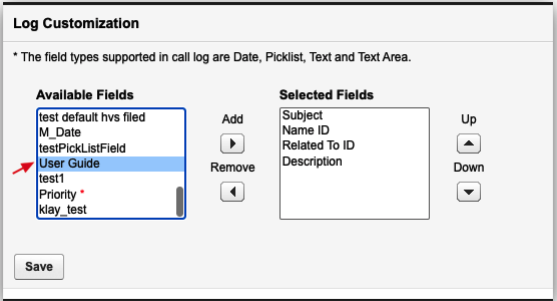
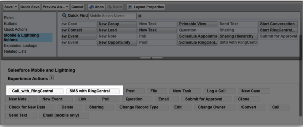
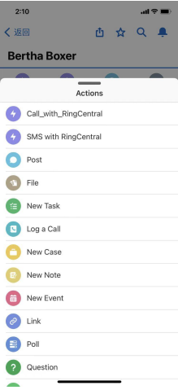

General Questions
Q. I keep seeing 'Webphone Unavailable' error message?
A. Users may encounter a "Webphone Unavailable" error message when attempting to call from RingCentral for Salesforce. This error typically occurs due to insufficient microphone permissions in the browser. To identify and resolve the issue, consider the following rules:
Solution 1: Enable Microphone Permissions
When users see the "Webphone Unavailable" error message, instruct them to click on it. This action will open the browser site settings. Ensure that the toggle for Microphone is turned on. Once enabled, the error message should disappear, allowing users to use RingCentral for Salesforce for making calls.
Solution 2: Check Browser Privacy Settings
If users still encounter the "Webphone Unavailable" error message after allowing microphone permissions, recommend checking the browser privacy settings. For Google Chrome:
- Go to Browser Settings
- Select Privacy and security
- Select Microphone
- Verify the following: - The correct microphone is selected (e.g., MacBook Pro Microphone (Built-in)(System default)) - Under default behavior, "Sites can ask to use your microphone" radio button is selected - The Salesforce site is not listed under "Not allowed to use your microphone" - The Salesforce site is present under "Allowed to use your microphone"
Solution 3: Check microphone permissions in Salesforce
If all browser permissions are allowed and the error persists, recommend checking permissions in Salesforce:
- Navigate to Salesforce → Setup → Session Settings → Browser Feature Permissions
- Ensure either "Include Permissions-Policy HTTP header" is unchecked, or if checked, set Microphone to Always
- Reference: https://help.salesforce.com/s/articleView?id=000570789&type=1
Q. Why is the Related To field not auto-populated when logging a call?
A. To ensure the "Related To" field is auto-populated when logging a call, follow these steps:
Enable the "Enhanced autofill 'Contact Relationship' when using click to dial" checkbox. Access the "Autofill Related-To in Call Log for Click to Dial" settings from the RingCentral Admin for Lightning advanced settings in the Admin UI.
Q. How to create a custom field and add it to the create call log screen in RingCentral CTI?
A. Salesforce administrators can create a new custom field of various data types (e.g., Date, Text, Text Area, Picklist) and add it to the create call log screen. Users can update this field while on a call with an agent, which will ultimately update the Task object. This feature is beneficial for users who need to update a particular field inside the task during or after a call with an agent. Follow these steps to add a RingCentral custom field or a new custom field to the Call Log Screen:
- Navigate to Setup -> Object Manager -> Fields & Relationships -> Activity
- Add a new custom field
- Go to RingCentral Admin UI (Setup -> Search for 'Visualforce Pages' in Quick Find -> adminUI -> Preview)
- Under Log Customization, ensure the custom field is added to the Selected Fields from the Available Fields.

Q. Why do I see the error message "This record was modified by CUSTOMER_NAME during your edit session. Make a note of the data you entered, then reload the record and enter your updates again."?
A. This error occurs because after a Call Log Task is created, RingCentral for Salesforce continues to sync the call log (Call Log Synchronization (ringcentral.com)) in the background, then updates the Call Log Task.
If the customer opens the Task editor before the Call Log sync is complete and then tries to save the call log after the sync has finished, they will encounter this error message.
Solution
- Recommend that the Salesforce admin apply the 'Delay auto call logging for' setting to overcome this error message.
- Navigate to Setup -> Search for 'Visualforce Pages' in Quick Find -> adminUI -> Preview
- Under Auto Save Setting, ensure the checkbox for 'Delay auto call logging for' is enabled with the desired amount of delay time selected. This will ensure the Call Log sync happens after the specified delay, allowing users to edit the Task record before the sync occurs.
Q. What are all the custom fields provided by RingCentral in Salesforce?
A. Below are the RingCentral custom fields
-
Call Identification Fields:
● CALL_UNIQUE_ID_c
- Type: Text
- Length: 255
- External ID: true
- Unique: true
- Purpose: Unique identifier for each call
● CALL_UUID_c
- Type: Text
- Length: 255
- External ID: true
- Purpose: UUID for the call
-
Call Recording Fields:
● Call_Recording_c
- Type: Text (Formula)
- Formula: Creates a hyperlink to the call recording
- Purpose: Links to the call recording in RingCentral
● Recording_Information_c
- Type: Text
- Purpose: Stores recording metadata
-
Call Details Fields:
● call_start_time_c
- Type: DateTime
- Purpose: Start time of the call
● call_end_time_c
- Type: DateTime
- Purpose: End time of the call
● CallDurationInSeconds
- Type: Number
- Purpose: Duration of the call in seconds
● CallDisposition
- Type: Picklist
- Purpose: Result or outcome of the call
-
Caller/Callee Information:
● caller_name_c
- Type: Text
- Purpose: Name of the caller
● callee_name_c
- Type: Text
- Purpose: Name of the callee
● caller_location_c
- Type: Text
- Purpose: Location of the caller
● callee_location_c
- Type: Text
- Purpose: Location of the callee
● from_number_c
- Type: Text
- Purpose: Caller's phone number
● to_number_c
- Type: Text
- Purpose: Callee's phone number
-
Logging Type Field:
● RC_Logging_Type_c
- Type: Text
- Length: 255
- Purpose: Indicates the type of logging (e.g., 'sms', 'call')
-
Additional Fields:
● external_whoid_c
- Type: Text
- Purpose: External Who ID reference
● hvs_disposition_c
- Type: Text
- Purpose: HVS disposition field
● key_c
- Type: Text
- Purpose: Key field for additional data
-
Contact Fields:
● SMS_Number_c
- Type: Text
- Purpose: SMS number for the contact
● SendSMS_c
- Type: Boolean
- Purpose: Flag to indicate if SMS can be sent
-
Admin Settings Fields:
● AutoFill_c
- Type: Boolean
- Purpose: Auto-fill setting
● AutoSave_c
- Type: Boolean
- Purpose: Auto-save setting
● HvsDispositionField_c
- Type: Text
- Purpose: HVS disposition field setting
● HvsMode_c
- Type: Text
- Purpose: HVS mode setting
● IsUnMandatory_c
- Type: Boolean
- Purpose: Mandatory field setting
● ToVoiceMail_c
- Type: Boolean
- Purpose: Voicemail setting
● accountRelatedTo_c
- Type: Text
- Purpose: Account relation setting
● autoSelect_c
- Type: Boolean
- Purpose: Auto-select setting
● fieldOrder_c
- Type: Number
- Purpose: Field order setting
● popOnRinging_c
- Type: Boolean
- Purpose: Pop on ring setting
● saveOnRinging_c
- Type: Boolean
- Purpose: Save on ring setting
Q. Does click to dial work on custom reports?
A. Salesforce does not support the Click to Dial feature on the Custom Reports tab. This is a limitation from Salesforce, and customers need to check with Salesforce to enable this feature for RingCentral to work.
Click to Dial can only be performed from Contacts, Accounts, Leads, Opportunities, Cases, and Custom Objects. The Salesforce developer article for the function we utilize to perform click to dial on these Salesforce objects can be found at: https://developer.salesforce.com/docs/atlas.en-us.api_cti.meta/api_cti/sforce_api_cti_onclicktodial_lex.htm
Q. Screen pop does not open in a new tab.
A. The issue likely stems from the user utilizing Salesforce Lightning. In Lightning, the screen pop feature does not support opening in a new browser window or tab, which causes it to malfunction. I recommend that the customer contact Salesforce for a potential solution. In classic mode, however, this functionality should work correctly. The user should verify their version and troubleshoot accordingly.
If the customer is using the Classic version of Salesforce, the screen pop function typically works without issues. To troubleshoot in Classic, I recommend the following steps: Go to Salesforce -> Setup. In the Quick Find search bar, type "Softphone Layouts." Edit the RingCentral softphone. Under Screen Pop Settings, change the "Screen pops open within" option to "New browser window or tab." Save the settings.
After completing these steps, advise the customer to test an inbound call to verify the solution.
Q. The contact match does not work for person accounts.
A. We need to verify if the 'Associate Call/SMS Log with Person Account' setting is appropriately selected. If it is set to use the Name field, then users cannot match the records under the Related To field and vice versa.
To change the association of Call/SMS logs with person accounts, follow these steps:
Go to Salesforce -> Setup -> Search for Visualforce Pages in the Quick Find Click on adminUI -> Click Preview Under the Associate Call/SMS Log with Person Account section, select the field that you want to use to match records Click Save
Q. The contact match does not work for custom objects.
A. We need to check if the custom object is added to the softphone layout. Recommend the customer to: Go to Salesforce -> Setup -> Search for Visualforce Pages in the Quick find Click on adminUI -> Click Preview Ensure the Custom Object Support radio button is selected under "Settings for Matching Caller Details" Navigate back to the Setup page and search for Softphone Layouts Edit the RingCentral softphone Ensure the custom object is added to "Display these salesforce.com objects:" for inbound, outbound, and internal Call Types
Q. How to check or update the adapter URL for RingCentral call center?
A. Step 1: Get the correct Adapter URL
- Log in to your Salesforce org.
- Go to Setup → Visualforce Pages → find the item named OpenCTIIndex → click the preview icon to open the page.
- After opening the page, wait a while until the page content is loaded, then copy the URL from the browser.
Step 2: Compare with the URL set in the Call Center.
- Go to Setup → Call Centers → find the item you are currently using (we will create a call center named Cloud Phone App v2 in the latest version) → click the Edit icon.
- Check the CTI Adapter URL option. Compare the input value with the URL you copied earlier. If it's different, replace it with the copied value from step 1, save the settings, then refresh the CTI app to try again.
Q. How can I use RingCentral for making calls and sending SMS from the Salesforce mobile app?
A. The RingCentral for Salesforce application provides two actions:
- Call with RingCentral
- SMS with RingCentral
Both actions require the RingCentral Mobile application. Users can install RingCentral mobile from Google Play (Android) or the App Store (iOS).
The admin needs to set up each record type that needs the Call or SMS with RingCentral actions. For example, to set up for the Account record type,
- Go to Setup>Object Manager >Accounts>Page Layouts >Page Layout Assignment.
- Select the Page Layout you want to change and click Edit.
- Scroll to the Mobile & Lightning Actions section.
- Drag the actions you created to the Salesforce Mobile and Lightning Experience section.
- Click Save.
Upon relaunching the Salesforce Mobile app, both actions will be listed in the Account record action list.


Q. Can I log calls or SMS made from the Salesforce mobile app?
A. Yes, there are two ways to log calls and SMS to the Salesforce task object from the Salesforce mobile app:
-
Browser Integration: Users must be logged into the browser RingCentral for Salesforce CTI (Computer Telephony Integration). Direct logging from the Salesforce mobile app is not possible without this browser integration.
-
Server-side Call Logging: This method requires admin setup in the integration console (integrations.ringcentral.com) and enabling Activity Sync. Once configured, users can make calls and send SMS through any RingCentral platform (desktop application, mobile application, etc.), and these activities will be logged to the Salesforce standard or custom object activity as a task object. This allows users to log calls and SMS to Salesforce when using the RingCentral mobile app in conjunction with the Salesforce mobile app.
Q. Is the RingCentral Managed package for Salesforce compatible with ICU locale formats?
A. Yes, the RingCentral for Salesforce integration is compatible with ICU locale formats. However, users should be on version 6.26 or above. Changing ICU (International Components for Unicode) locale formats in Salesforce affects how dates, times, numbers, and currencies are displayed across the platform, including for users in Lightning Experience, Apex, and formulas. Salesforce has adopted ICU Locale Formats for better international standards support. RingCentral Apex classes have already complied with these changes, and an updated package has been released.
Q. RingCentral for Salesforce presence does not sync with RingCentral desktop application.
A. Presence in RingCentral for Salesforce CTI: The Salesforce CTI app does not have any automated presence logic and will not modify users' presence under any circumstances, unless the user explicitly sets their presence using the app.
- The presence in the CTI uses the RingCentral telephony or phone status. The presence statuses used in RingCentral Phone are: Available, Busy (On a Call), Do Not Disturb (DND), and Invisible/Offline
- The presence seen here is the same as the presence from RingCentral for Google and service.ringcentral.com
Presence inside RingCentral App (HUD):
- The presence inside HUD displays the user presence or the RingCentral App (Jupiter) presence, which is different from the phone presence. It supports several other statuses such as meeting status, manual status, and custom status.
There are many presence statuses in RingCentral: https://developers.ringcentral.com/api-reference/Presence/readUserPresenceStatus
The usage of these presence statuses in different apps may vary. Our platform team is still working on supporting unified presence across all RingCentral apps. However, the APIs are currently in beta (https://developers.ringcentral.com/api-reference/Presence/readUnifiedPresence). Our team will begin implementation once the platform team fully supports these APIs.
Q. Why cannot I uninstall the RingCentral for Salesforce package (rc_sf_package)?
A. If an admin is unable to uninstall the RingCentral for Salesforce package, they typically see a list of problems with Component Type, Name, and Problem message. The most common reason for uninstallation failure is that the page layout for the Task object is still using RingCentral custom fields. In this case, the Component Type would be Page Layout, the Name would be Task.TaskLayout, and the Problem message would state, "The installed component is referenced by a locally created component (User Profile)."
We recommend the admin take the following steps:
- Go to Setup → Object Manager → Task → Page Layouts.
- Open the Task Layout and review it for any RingCentral custom fields.
- Remove any RingCentral-specific custom fields from the page layout. Examples include Call Result, Call Duration, Call Type, Call Recording, CALL_UNIQUE_ID, CALL_UUID, external_whoid, RC Logging Type, From Number, From Number Location, Caller Name, To Number, To Number Location, Callee Name, Start time, and End time.
- If this page layout is specific to RingCentral alone, consider removing it completely.
- Attempt to uninstall the package again.
If after removing all references you still face issues with uninstalling the package, there might be hidden dependencies or issues that require further investigation. In this case, contact Salesforce Support for more specific assistance with the uninstallation process of RingCentral (rc_sf_package).
Q. Why are missed call queue calls not logged to Salesforce?
A. Below is the reason why missed call queue calls are not logged to Salesforce,
If a call is missed by one member and picked up by another, multiple records will be created as one member logs it as a missed call, while another logs it as a connected call. The situation worsens if the queue rings all members at once. To address this problem, the application now ignores Call Queue calls that are ringing and appear to be missed by the current user. Ringing queue calls are ignored because we can only determine the outcome of the call after it's been picked up by someone or completely missed by the account. Missed calls are ignored as presumably some other member will pick up the call and log it.
The above behavior is intended. The call should be logged by another member if it is picked up. If the call is completely missed, it will likely not be logged. The logic to log this would conflict with the logic to avoid duplications. As a workaround, users should follow the server-side call logging logic, which requires an admin to complete the setup in the integration console (integrations.ringcentral.com) and enable Activity Sync. Our server component handles the logging of calls and will be able to log missed call queue calls correctly, as the service sees the call logs from the standpoint of the entire account.
Q. I have audio issues with RingCentral for Salesforce.
A. Users experiencing audio issues may encounter:
- Inability to hear audio while placing a call
- One-way audio
- Delay in audio
There could be several factors causing audio problems, with the most common reasons being:
- RingCentral STUN servers are blocked. Customers need to ensure there are no firewall or NAT rules blocking UDP traffic, and that "stun1.ringcentral.com:19302" and "stun2.ringcentral.com:19302" are reachable.
- SIP messages sent from RingCentral for Salesforce CTI through the websocket to wss://sip*.ringcentral.com:8083 do not go through.
In such cases, we recommend users follow these steps:
- Set the RingCentral for Salesforce integration app calling option to "call with RingCentral app." This allows the actual phone calls to be handled by the RC desktop app, while the CTI app should still be able to monitor and log calls.
- If users still experience audio issues, the problem may be with their network. We recommend users work with their IT department to disable the firewall and test calls or switch to a different network.